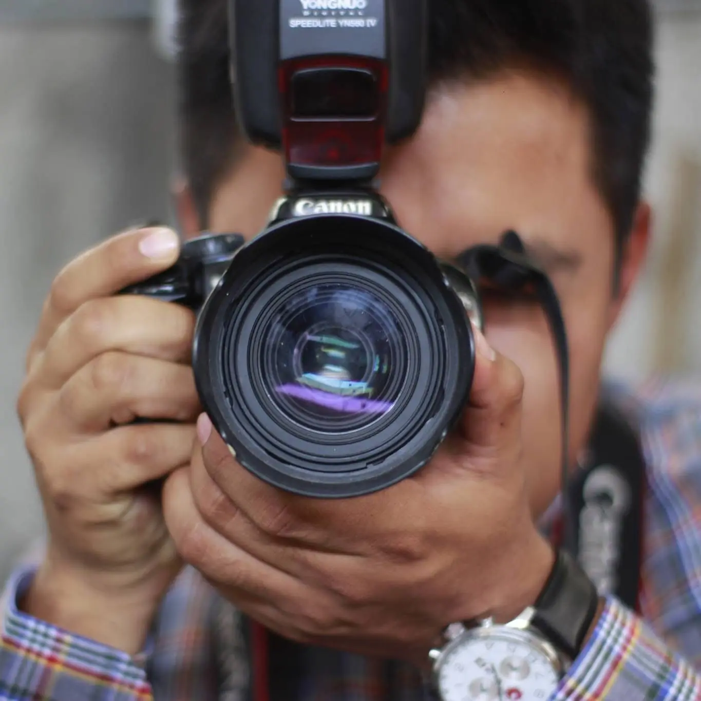
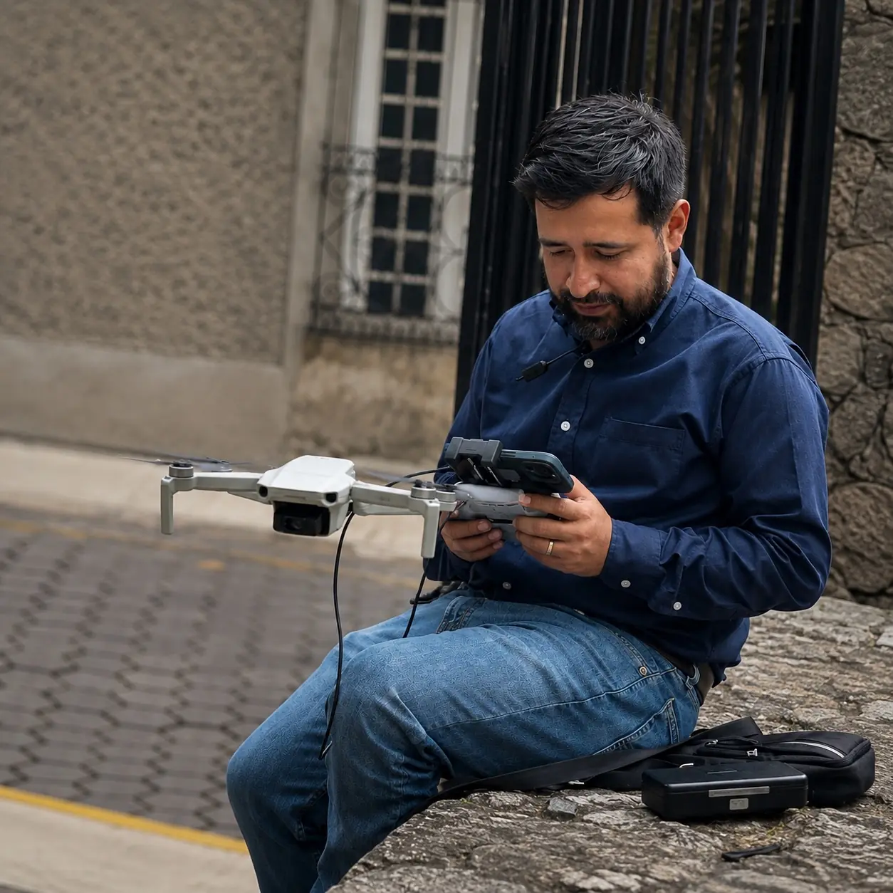

Fotografía y video de bodas
Puebla · Tlaxcala
Nuestra historia
Dos amigos.
Una mirada compartida.
Snapshot comenzó como una propuesta entre dos amigos unidos por el gusto por la fotografía.
Hoy somos un equipo de profesionales especializados en documentar bodas. Héctor Jiménez dirige el área de fotografía y Antonio Reyes el área de video, acompañados por fotógrafos, camarógrafos y editoras que cuidan cada etapa de producción.
Después de más de 300 bodas, seguimos trabajando con el mismo propósito: preservar el amor, la emoción y la forma en que vivieron uno de los días más importantes de su historia.

Héctor Jiménez
Dirección de fotografía

Antonio Reyes
Dirección de video
Opiniones verificadas
La confianza de quienes ya vivieron esta experiencia.
“Te dan toda la atención personalizada… la calidad y color que tienen.”
“Muy responsables y profesionales.”
“Todas salieron muy naturales y con mucha calidad.”
Reconocimientos
Dos Wedding Awards y un compromiso que continúa.
Proveedor Premium en Bodas.com.mx · Wedding Awards 2022 y 2024.
Consultar todas las opiniones


La experiencia Snapshot
Un proceso claro para disfrutar cada momento.

- 01
Conversemos
Conocemos su historia, la fecha, las locaciones y lo que desean conservar. Con esa información les ayudamos a elegir la cobertura adecuada.
- 02
Planeamos
Definimos horarios, recorridos y momentos importantes. También compartimos ideas de fotografías, locaciones y poses.
- 03
Documentamos
Trabajamos con un plan y un equipo coordinado. Según el paquete, la cobertura puede incluir fotografía, video, dron y entre 7 y 10 horas de acompañamiento.
- 04
Seleccionan y reciben
A las dos semanas enviamos las fotografías para selección. La entrega completa puede estar lista en cuatro semanas o hasta cinco durante temporada alta.
Portafolio de bodas
Momentos irrepetibles.
Fotografía · Video · Celebraciones reales


Nuestra filosofía
Las mejores fotografías no se toman.
Se viven.
— Snapshot Fotografía
Agenda tu fecha
Comencemos a contar su historia.
Cada boda, cada XV años y cada familia empieza con una conversación.
Enviar WhatsApp